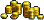
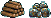
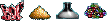
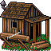
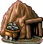
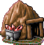
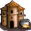
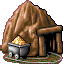
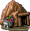
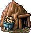

Игра Heroes of Might and Magic (HoMM), созданная фирмой New Worlds Computing в 1995 году формально является продолжением широко известного RPG сериала Might And Magic. Однако, по жанру она относится к стратегическим играм и является дальнейшим развитием идей игры King's Bounty, созданной в 1991 году той же фирмой. Существуют версии для DOS (Наиболее распостраненная) и Windows в которой имеется редактор сценариев а также апгрейд до версии 1.2 (Для DOS и Windows разный) Игра чрезвычайно нетребовательна к ресурсам компьютера и прекрасно работает на любой современной машине (Для интересующихся историей скажем что процессор 486 SX-25 мгц (!) на 8 МБ RAM будет отличной конфигурацией ! )
В 2002 году компанией «Бука» была издана русская версия, применительно к которой и создан этот документ. В скобках дополнительно указываются названия из английской версии.
Существует три вида игры: Обычная игра (Standard game), Играть кампанию (Campaign game) и Сетевая игра (Multi-Player game).
Кампания - это цепочка из восьми миссий, выполняемых для одного из четырех владык: Лорда Айронфиста (Lord Ironfist), Вождя Слейера (Lord Slayer), Царицы Ламанды (Queen Lamanda) и Колдуна Аламара (Lord Alamar).
По сути дела кампания одна, т.к. действие проходит на одних и тех же картах, только за разные замки.
| № | Лорд Айронфист | Вождь Слейер | Царица Ламанда | Колдун Аламар | Цель миссии |
| 1 | Предвратье (Gateway) | Предвратье (Gateway) | Предвратье (Gateway) | Предвратье (Gateway) | Захватить город Предвратье (Gateway) |
| 2 | Архипелаг (the Archipelago) | Архипелаг (the Archipelago) | Архипелаг (the Archipelago) | Архипелаг (the Archipelago) | Покорить весь архипелаг |
| 3 | Больные земли (the Wounded Land) | Больные земли (the Wounded Land) | Больные земли (the Wounded Land) | Больные земли (the Wounded Land) | Найти "Око Гороса" (Eye of Goros) |
| 4 | Свобода любой ценой (Free-for-All) | Свобода любой ценой (Free-for-All) | Свобода любой ценой (Free-for-All) | Свобода любой ценой (Free-for-All) | Покорить всю страну |
| 5 | Замок Слейера (Castle Slayer) | Замок Айронфиста (Castle Ironfist) | Замок Айронфиста (Castle Ironfist) | Замок Айронфиста (Castle Ironfist) | Захватить главный замок лорда |
| 6 | Замок Ламанды (Castle Lamanda) | Замок Ламанды (Castle Lamanda) | Замок Слейера (Castle Slayer) | Замок Слейера (Castle Slayer) | Захватить главный замок лорда |
| 7 | Замок Аламара (Castle Alamar) | Замок Аламара (Castle Alamar) | Замок Аламара (Castle Alamar) | Замок Ламанды (Castle Lamanda) | Захватить главный замок лорда |
| 8 | Царь горы (King-of-the-Hill) | Царь горы (King-of-the-Hill) | Царь горы (King-of-the-Hill) | Царь горы (King-of-the-Hill) | Захватить цитадель драконов |
При выборе загрузки игры (Загрузить игру / Load Game) можно сыграть в учебную миссию, выбрав "Обычная игра", а затем "Обучение" (Tutorial). Ее цель - захватить страну Когти (Claw), в которой присутствуют все четыре силы, и каждой дано по одному городу.
Поддерживаются четыре варианта многопользовательской игры:
К сожалению, протокол TCP/IP не поддерживается, поэтому поиграть Online в HoMM I через интернет не удастся.
При стандартной игре для компьютерных игроков задается уровень интеллекта:
Тупой (Dumb), Средний (Average), Умный (Smart) и Гений (Genius).
Для игрока-человека можно задать стартовый уровень: Легкая (Easy), Обычная (Normal), Тяжелая (Hard) и Эксперт (Expert) (стартовый уровень определяет количество ресурсов в начале игры)
| Ресурс\Level | Easy | Normal | Hard | Expert |
|  | 10000 | 7500 | 5000 | 0 |
|  | 30 | 20 | 10 | 0 |
|  | 10 | 5 | 0 | 0 |
Кроме всего прочего перед началом игры выбирается карта, на которой будет происходить сражение. Карты имеют три размера: Маленькая (Small), Средняя (Medium) и Большая (Large). Можно также выбрать ваш любимый цвет для своих героев.
Ресурсы - основа экономики вашего государства. Как известно, деньги решают все. Без золота вам не удастся нанять даже бедного мужика, а без ресурсов ничего не удастся построить. Поэтому начиная игру надо как можно быстрее захватить хотя бы по одной шахте каждого ресурса. Именно КАЖДОГО поскольку по воле авторов игры РЫНКОВ В ГЕРОЯХ 1 НЕТ !!! Поэтому легко можно оказаться в положении богатого буратино , имея например 20000 дерева и 0 камня. И НИЧЕГО СДЕЛАТЬ НЕЛЬЗЯ ! Поэтому не забывайте про тяжелый труд шахтера - на нем держится ваше могущество.
| Вид | Ресурс | Прирост в день |
|  | Дерево / Wood | 2 |
|  | Руда / Ore | 2 |
|  | Кристаллы / Crystal | 1 |
|  | Ртуть / Mercury | 1 |
|  | Сера / Sulphur | 1 |
|  | Самоцветы / Gems | 1 |
|  | Золото / Gold | 1000 |
Дальность хода героя по суше зависит от скорости самого медленного отряда в его армии. См. таблицу:
| Скорость существа | Расстояние |
| Низкая / Slow | 10 |
| Средняя / Medium | 12 |
| Высокая / Fast | 15 |
Затраты на перемещение по рельефу
| Снег | Дальность хода уменьшается в 1,5 раз* |
| Болото | Дальность хода уменьшается в 1,5 раз* |
| Пустыня | Дальность хода уменьшается в 2 раза* |
| По диагонали | Дальность хода уменьшается в 1,5 раз |
Несмотря на то, что на картах есть дороги, на перемещение героя они не влияют никак т.е. ходить по дорожкам необязательно!
Кроме скорости самого медленного монстра в армии, на дальность перемещения героя по суше влияют артефакты.
Дальность хода героя определяется на начало игрового дня. Изменение состава армии (замена тихоходных монстров на быстроходных и наоборот) и добавление артефактов в этот день уже не повлияют на дальность хода.
Дальность перемещения героя по морю не зависит от дальности перемещения по суше и равна 15 единицам независимо от скорости отрядов армии героя. Посещение Маяка дает всем героям +5 единиц перемещения по морю. Погрузка на корабль и высадка с корабля забирают все оставшиеся у героя на текущий день единицы перемещения. Колдуньи обладают двухкратным бонусом перемещения по морю.
| Атака / Attack Skill | Навык нападения, число в скобках с учетом навыка героя. |
| Защита / Defense Skill | Навык защиты, число в скобках с учетом навыка героя. |
| Стрел / Shots | Количество выстрелов для стрелков, если числа нет - значит, монстр не стреляет |
| Урон / Damage | Величина повреждений наносимых монстром |
| Здоровье / Hit Points (HP) | Показывает максимальное количество здоровья. |
| Скорость / Speed | Показатель скорости монстра (три типа: Slow, Medium и Fast). |
| Мораль / Morale | Показатель морали |
| Удача / Luck | Показатель удачливости |
Мораль - способность отряда иногда атаковать вторично (если величина морали положительная) или не атаковать вообще (если величина морали отрицательная).
Источники увеличения морали:
Модификаторы морали войск
| Посещение статуи | +2 |
| Посещение буя | +1 |
| Посещение оазиса | +1 |
| Все отряды одной расы | +1 |
| Отряды из трех разных рас | -1 |
| Герой - рыцарь (Knight bonus) | +1 |
Удача - способность отряда иногда в 2 раза увеличивать урон. Высокая удачливость увеличивает шанс нанести максимальный вред во время боя.
Модификаторы удачи войск
| Посещение кольца фей (faerie's ring.) | +1 |
| Посещение фонтана (fountain) | +1 |
Армия героя должна включать как минимум один отряд, максимум - пять. В отличие от более поздних версий игры все пять отрядов должны быть обязательно разного типа, при попытке поместить в пустой слот отряд уже имеющегося типа - такие войска объединяются. Герои могут обмениваться войсками и артефактами - для этого достаточно подойти одни героем к другому. Для разделения армии между героями или героем и гарнизоном нужно во время переноса удерживать клавишу Shift. Для роспуска отряда достаточно на его экране нажать кнопку Dismiss.
Точно можно узнать только для героев, если использовать заклинание "Опознать героя" (Identify Hero). Однако, за словами "много", "мало" и т. п. лежат конкретные значения.
Обозначения количества войск
| Мало / Few | 1-4 |
| Немного / Several | 5-9 |
| Свора / Pack | 10-19 |
| Много / Lots | 20-49 |
| Орда / Horde | 50-99 |
| Тьма! / Zounds! | 100 и более |
К сожалению, вместо героя на поле боя имеется аккуратная палатка, в которой по замыслу авторов он и находится.
Эта самая палатка и может:
Герой может сбежать или сдаться только на ходе его отрядов. Сбежать можно и от бродячих монстров, а сдаться можно только врагу, причем для этого должно быть достаточно золота. Если у героя-компьютерного игрока есть артефакты, то он однозначно имеет "приоритет на сбегание", который тем больше, чем больше артефактов он имеет но если герой – компьютерный игрок - находится в замке, или у его стороны уже нет городов (возможности их построить), то он будет биться до конца. В этом случае, победив врага, вы можете получить все его артефакты (если хватит свободных ячеек) за исключением МОГУЩЕСТВЕННЫХ АРТЕФАКТОВ, которые захватить в бою нельзя.
Размер наносимого урона (damage) при атаке того или иного отряда рассчитывается по следующей формуле: - Damage1*N*(Attack1/Defense2), где:
Это определяется параметром Speed. Если эти параметры совпадают - атакующие ходят вперед атакуемых. В группе имеет значение положения отряда - вперед ходят те, кто находится выше. При высокой морали отряд может ходить повторно с тем большей вероятностью, чем больше мораль. Заклинания "Ускорение" (Haste) и "Замедление" (Slow) изменяют последовательность ходов, передвигая данный отряд вверх или вниз в очереди. После боя герой получает некоторый опыт, который равен сумме HP убитых существ и дополнительного бонуса за победу над героем (500 единиц) и(или) взятие города (500 единиц).
Во время осады города, его стены (если построен замок) защищают осаждаемые войска от агрессора. У осаждающего имеется катапульта, которая, стреляя раз за разом, сносит случайные части стены и, постепенно, пробивает бреши через которые могут пройти войска. При наличии артефакта "Баллиста" (Ballista) катапульта будет стрелять дважды за ход. Для пробивания участка стены катапульта должна попасть в него дважды.
В замке имеется стрелковая башня, Damage которой зависит от количества построек в городе и уровня гильдии магов. Если в городе есть герой, то его навык атаки (Attack skill) прибавляется к силе башни. Стрелковая башня не может быть уничтожена. Даже при полностью разрушенных стенах она продолжает стрелять.
Могут присоединится к вашей армии, если у героя есть свободный слот для них или есть войска того же типа и армия героя не слабее. Воевать с бродячими существами проще, чем с другими героями, так как у них некому применять магию и никаких бонусов атаки и защиты.
Когда по отряду наносится рукопашный удар, выжившие после него монстры наносят ответный удар. Естественно, что если весь вражеский отряд был уничтожен, то ответа не последует. Почти все монстры способны ответить только на первую рукопашную атаку. За исключением Грифона (Griffin), который неограниченно отвечает на атаку.
Есть также монстры, на атаку которых враг не отвечает:
Некоторые существа имеют возможность стрелять и своими снарядами могут поражать цели на расстоянии. Однако количество выстрелов не бесконечно. Все стрелки в рукопашном бою наносят только половинный урон; а также теряют возможность стрелять, если вступают в непосредственный контакт с войсками противника.
| Монстр | Жилище | Количество выстрелов за битву |
| Лучник / Archer | Стрельбище / Archery Range | 12 |
| Орк / Orc | Хибара / Stick Hut | 8 |
| Тролль / troll | Мост / Bridge | 8 |
| Эльф / Elf | Стрельбище / Archery Range | 24 (2 выстрела за ход ) |
| Друид / Druid | Стоунхендж / Stonehenge | 8 |
| Кентавр / Centaur | Пещера / Cave | 8 |
Некоторые монстры обладают возможностью применять те или иные заклинания. Однако это носит полностью случайный характер:
Для любителей DOS приводим полный список
На карте
| Клавиша | Действие |
| Н, Tab | Переключение между героями, имеющими ход |
| Enter | Открыть экран текущего героя или города |
| M | Перемещение героя по обозначенному пути (Movement) |
| K | Обзор королевства (Kingdom) |
| C | Открытие книги заклинаний (Cast Spells) |
| Q | Выход из игры (Quit) |
| E | Конец хода (End) |
| A | Опции приключения (Adventure) |
| Просмотр карты (View World) |
| Карта загадки (view puzzle) |
| Копать (Dig) |
| Просмотр информации о миссии (Info) |
| G | Системные опции (Game) |
| Загрузить игру |
| Сохранить игру |
| Новая игра |
| T | Переключение между городами (Towns) |
| Стрелки | Перемещение текущего героя |
| Ctrl+Стрелки | Прокрутка карты |
| A | Автоматическая битва |
| S, Space | Пропуск хода |
| C | Открыть книгу магии (Cast spells) |
| T | Информация о монстре имеющем ход (troop) |